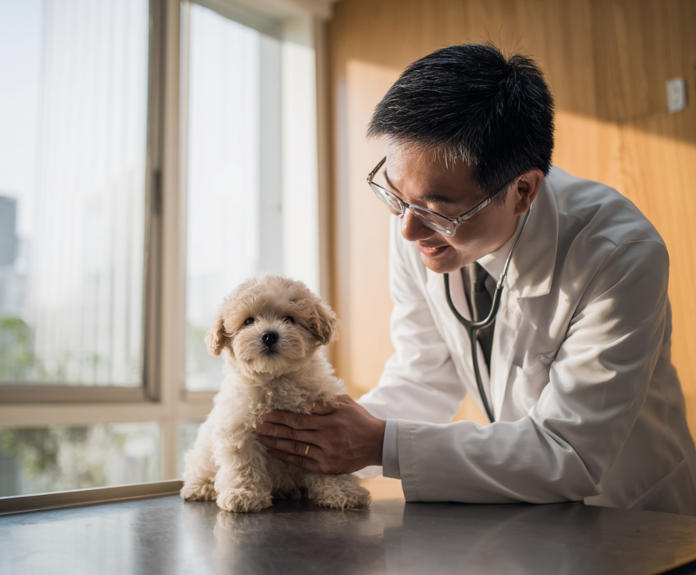

전문적인 반려동물 케어
각 분야별 전문 의료진이 정성을 다해 진료합니다.

건강검진
정기적인 검진으로
질병을 조기에 예방합니다.

예방접종
기초 접종 및
심장사상충 예방 케어

내과 진료
풍부한 경험으로
정확하게 진단하고 치료합니다.

미용/그루밍
스트레스 없는, 편안한
미용서비스를 제공합니다.
처음 방문부터
신뢰가 쌓이는 진료
투명한 상담
전 과정을 상세히 설명해 드립니다.
철저한 위생
안전한 환경을 최우선으로 합니다.
정품 장비
검증된 안전한 장비만을
사용합니다.
맞춤형 사후 관리
진료 후 관리 방법까지 꼼꼼히
챙겨드립니다.

최고의 전문 의료진
풍부한 경험과 진심 어린 마음으로 반려동물을 대합니다.
김안심 원장
내과 / 외과 전문의
"반려동물에게는 가족의 마음으로, 보호자님께는 친구처럼 다가갑니다."
이진심 부원장
고양이 / 예방의학
"세심한 관찰과 투명한 소통으로 정확한 진료를 약속합니다."